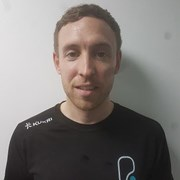

WHY SHOULD I TRAIN MY FULL-BODY?
When you're strapped for time but want to get the most from your efforts in the gym, a full body workout is a great choice no matter what your goal or fitness level may be.
Here are the main benefits to performing full body exercises:
- Full body exercises supersize results by targeting more muscle groups in less time. In short, they're the easiest way to maximise your time in the gym and are easier to fit into your busy schedule. Despite best intentions, we know it's not always easy to work out as much as we'd like which is one of the reasons why full body training is very popular.
- The variety of full body exercises on offer make them one of the best ways to stay motivated and keep your workouts enjoyable as you can chop and change between exercises safe in the knowledge you're still getting a fantastic work out. Many full body exercises do not require equipment so they can be performed anytime and anywhere.
- Full body exercises require using a combination of muscles, which means you’re more likely to burn more calories performing these exercises than focusing on single body parts, so it can be a great addition to your training regime if your goal is weight loss.
As you'll be targeting many muscle groups it's essential you give your body time to recover. That's why we recommend at least one day's rest between full body training sessions.
To get you started with your full body training, select each exercise below for top tips and how-to guides to some of our favourite full body exercises.
Work and tone your entire body, anytime and anywhere, with this one move
Muscles worked:
- Arms and shoulders
- Legs
- Core
Torch calories and fire up your workouts with some mountain climbers
Muscles worked:
- Arms and shoulders
- Legs
- Core
Swing your way to a strong and toned body with some kettlebell swings
Muscles worked:
- Arms and shoulders
- Legs
- Core
Full body workouts are great for overall muscular balance, fat loss and conditioning. Perfect if you are on a time limit, like to workout at home or enjoy mixing up your workouts with a variety of equipment. Perform these 3 times per week as your body needs more time for recovery due to the multiple muscle groups used in each session.
Juan Ma
Coach